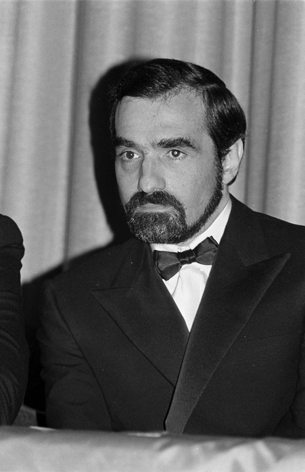

Martin Scorsese ha sido reconocido como el cineasta estadounidense más importante de su generación. Las pruebas de esta aclamación crítica son abundantes: Mean Streets (1973), Taxi Driver (1976) y Raging Bull (1980) figuran entre las 360 grandes películas seleccionadas por Sight and Sound y el British Film Institute; (1) Raging Bull fue elegida como la mejor película estadounidense de la década de 1980 por American Film; (2) y Raging Bull quedó en segundo lugar en la votación de las Diez Mejores Películas de todos los tiempos (por detrás de Citizen Kane) en una encuesta internacional realizada entre cineastas por Sight and Sound en 1992. (3) Su falta de reconocimiento por parte de los Premios de la Academia, en realidad, contribuye a su reputación en lugar de perjudicarla; después de todo, Orson Welles, Alfred Hitchcock y Stanley Kubrick también fueron privados de un Óscar. Gracias a este reconocimiento tanto por parte de cineastas como de críticos, Scorsese ha podido acumular un considerable prestigio y poder cultural, a pesar del éxito limitado y, en ocasiones, del fracaso rotundo de sus películas en la taquilla. El prestigio de Scorsese también proviene de su defensa de la preservación cinematográfica y de sus esfuerzos por garantizar que nuestro «patrimonio cinematográfico» no se pierda. A medida que envejece, Scorsese, como árbitro cultural del gusto, se ha vuelto tan célebre como Scorsese el cineasta, como demuestra el documental que realizó para el BFI en 1995 sobre la historia del cine estadounidense, A Personal Journey with Martin Scorsese Through American Movies. Si Steven Spielberg, gracias a su éxito de taquilla y a sus Premios de la Academia, es el representante popular de su generación, Scorsese es, claramente, el niño mimado de la crítica de esa generación. (Marc Raymond, Senses of Cinema)
| Película | Año | Duración | Género | Calificacíon |
|---|---|---|---|---|
| What's a Nice Girl Like You Doing in a Place Like This? | 1963 | 10m03s | Corto, Comedia, Drama | No lo vi |
| It's Not Just You, Murray! | 1964 | 16m39s | Corto, Crimen | No lo vi |
| Who's That Knocking at My Door | 1967 | 1h26m | Drama | Dos querubines |
| The Big Shave | 1968 | 5m50s | Corto, Terror | Dos querubines |
| Street Scenes | 1970 | 1h16m | Documental | No lo vi |
| Boxcar Bertha | 1972 | 1h28m | Crimen, Romance | Un querubín |
| Mean Streets | 1973 | 1h51m | Crimen, Drama | Tres querubines |
| Alice Doesn't Live Here Anymore | 1974 | 1h52m | Drama, Romance | Cuatro querubines |
| Italianamerican | 1974 | 49m31s | Documental | No lo vi |
| Taxi Driver | 1976 | 1h53m | Drama, Crimen | Cinco querubines |
| New York, New York | 1977 | 2h43m | Musical, Drama | Dos querubines |
| The Last Waltz | 1978 | 1h57m | Música, Documental | Cuatro querubines |
| American Boy: A Profile of - Steven Prince | 1978 | 55m05s | Documental | No lo vi |
| Raging Bull | 1980 | 2h09m | Drama, Biopic, Deportes | Cinco querubines |
| The King of Comedy | 1982 | 1h48m | Drama, Crimen | Cinco querubines |
| After Hours | 1985 | 1h37m | Comedia | Cinco querubines |
| The Color of Money | 1986 | 1h59m | Drama, Deportes | Tres querubines |
| The Last Temptation of Christ | 1988 | 2h43m | Drama, Biopic | Cinco querubines |
| New York Stories [con Francis Ford Coppola y Woody Allen] | 1989 | 2h04m | Drama, Comedia, Romance | Tres querubines (Scorsese) |
| Goodfellas | 1990 | 2h25m | Crimen, Biopic, Drama | Cinco querubines |
| Made in Milan | 1990 | 26m23s | Corto, Documental | No lo vi |
| Cape Fear | 1991 | 2h07m | Crimen | Tres querubines |
| The Age of Innocence | 1993 | 2h18m | Drama, Romance | Cuatro querubines |
| Casino | 1995 | 2h58m | Crimen, Drama | Cuatro querubines |
| A Personal Journey with Martin Scorsese Through American Movies [con Michael Henry Wilson] | 1995 | 1h12m | Documental | No lo vi |
| Kundun | 1997 | 2h14m | Drama, Biopic | Dos querubines |
| Bringing Out the Dead | 1999 | 2h01 | Drama | Tres querubines |
| Il mio viaggio in Italia | 1999 | 4h06m | Documental | No lo vi |
| Gangs of New York | 2002 | 2h46m | Crimen, Drama | Tres querubines |
| The Blues [con Charles Burnett, Clint Eastwood, Mike Figgis, Marc Levin, Richard Pearce y Wim Wenders] | 2003 | 12h50m | Documental | Cinco querubines |
| The Aviator | 2004 | 2h50m | Drama, Biopic | Cinco querubines |
| Lady by the Sea: The Statue of Liberty | 2004 | 47m06s | Documental | No lo vi |
| No Direction Home: Bob Dylan | 2005 | 3h28m | Documental, Biopic | Cinco querubines |
| The Departed | 2006 | 2h31m | Crimen, Drama | Cuatro querubines |
| The Key to Reserva | 2007 | 9m54s | Corto, Comedia | No lo vi |
| Shine a Light | 2008 | 2h02 | Música, Documental | Tres querubines |
| Shutter Island | 2010 | 2h18 | Misterio, Drama | Tres querubines |
| Public Speaking | 2010 | 1h22 | Documental | No lo vi |
| A Letter to Elia [con Kent Jones] | 2010 | 1h | Documental | No lo vi |
| George Harrison: Living in the Material World | 2011 | 1h34 | Documental | Tres querubines |
| Hugo | 2011 | 2h06m | Aventuras, Drama | Tres querubines |
| The Wolf of Wall Street | 2013 | 2h59m | Drama, Crimen, Biopic | Cuatro querubines |
| The 50 Year Argument [con David Tedeschi] | 2014 | 1h37 | Documental | No lo vi |
| The Audition | 2015 | 16m14s | Corto, Comedia | Dos querubines |
| Silence | 2016 | 2h41m | Drama, Histórica | Cuatro querubines |
| Rolling Thunder Revue: A Bob Dylan Story by Martin Scorsese | 2019 | 2h22 | Documental, Música | Tres querubines |
| The Irishman | 2019 | 3h29m | Crimen, Drama, Biopic | Cuatro querubines |
| Pretend It's a City | 2021 | 3h23m | Documental | No lo vi |
| Personality Crisis: One Night Only | 2023 | 2h07 | Música, Documental | No lo vi |
| Killers of the Flower Moon | 2023 | 3h28m | Drama, Crimen, Western | Cinco querubines |